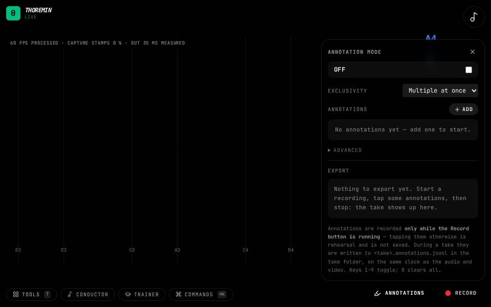
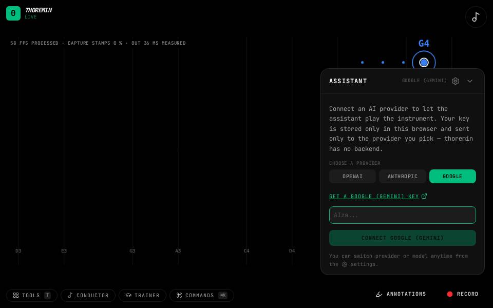
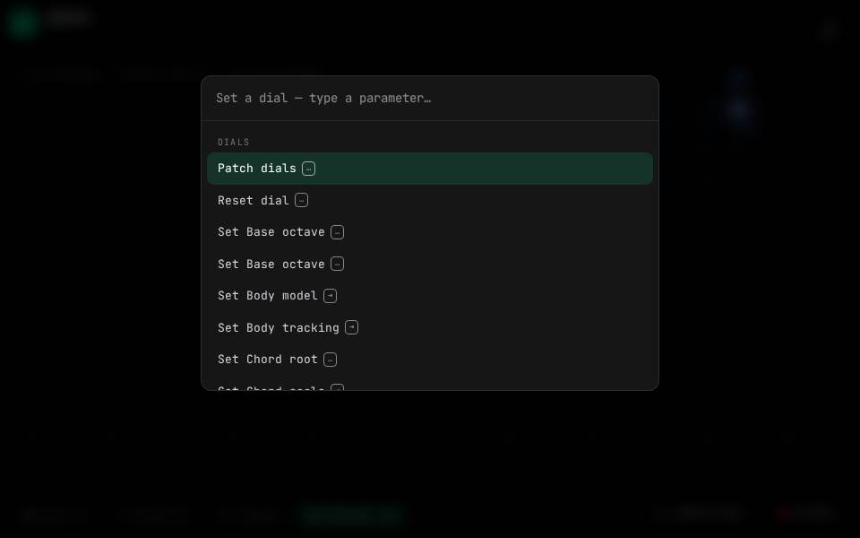
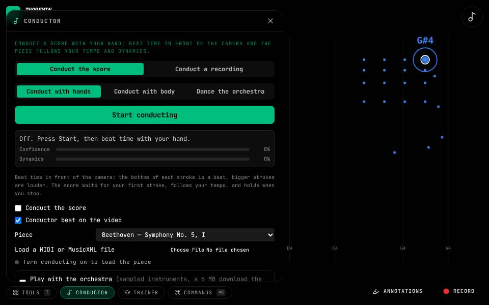
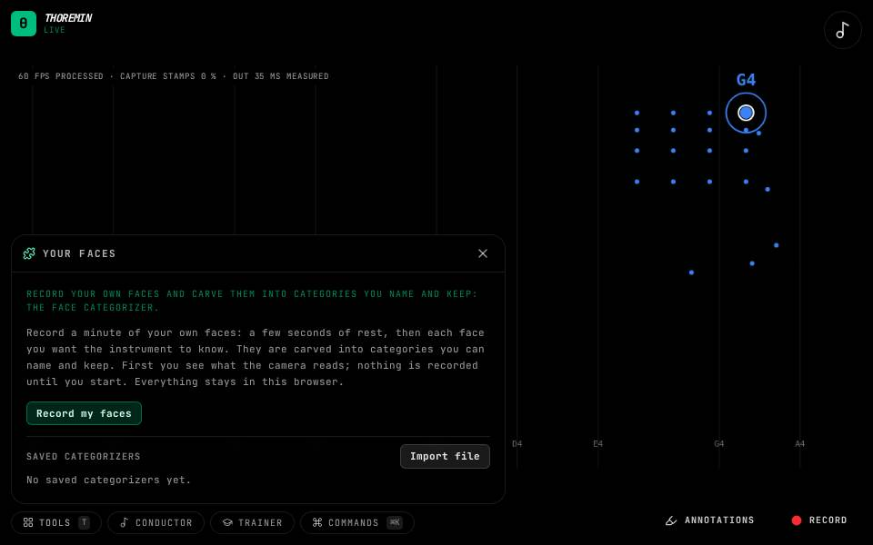
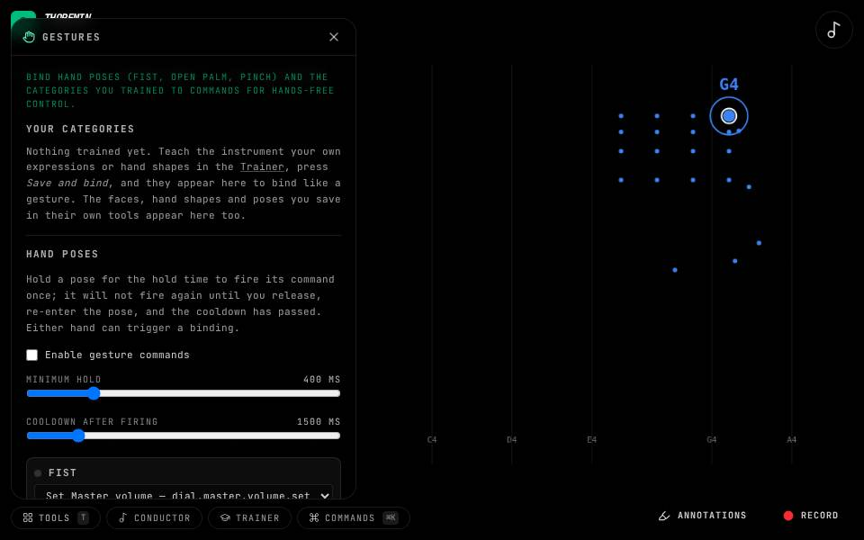
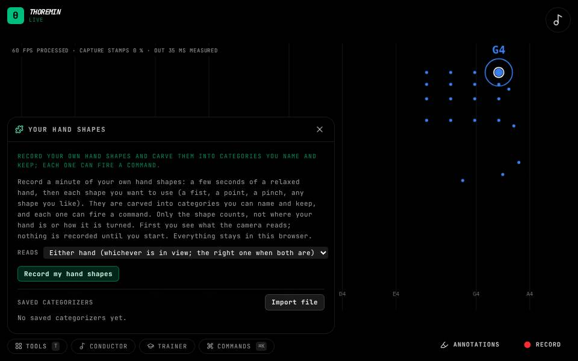
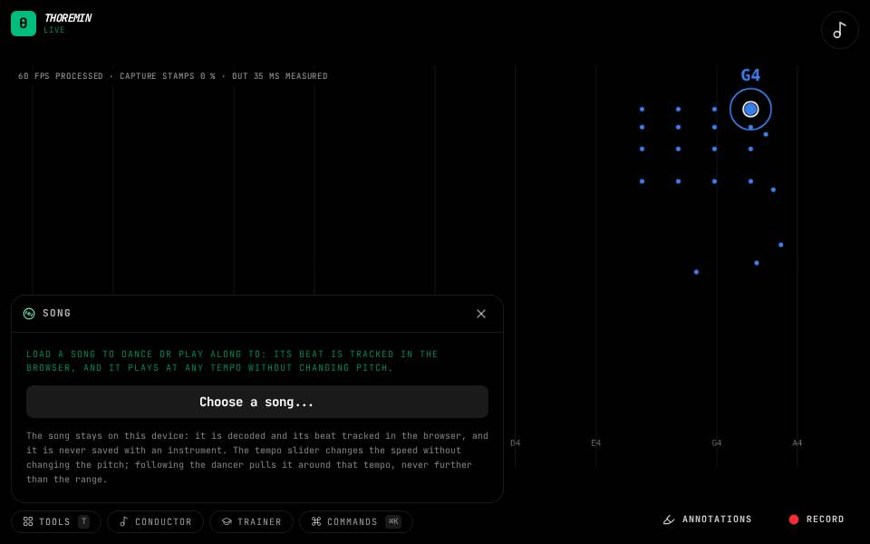
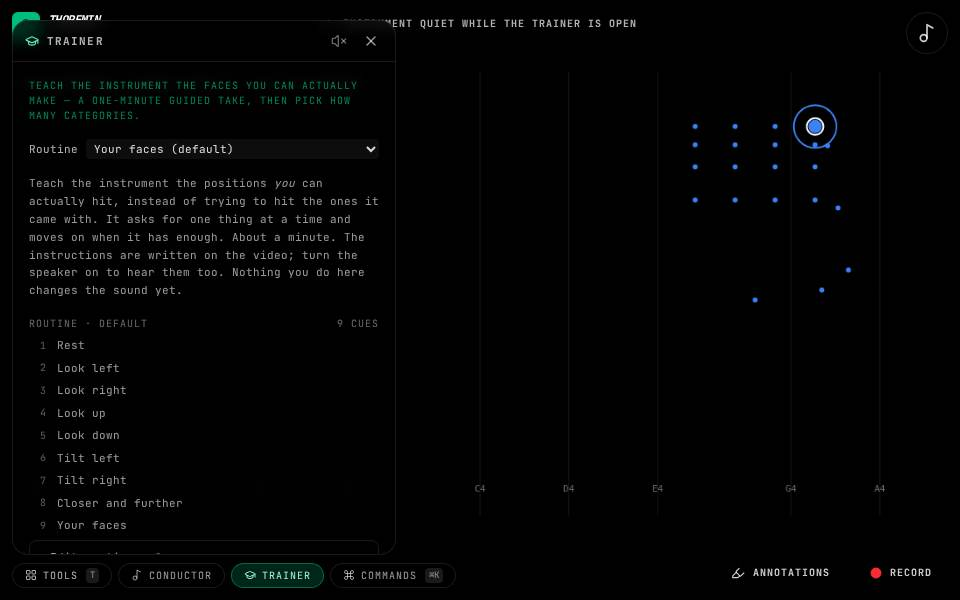

Tools
What you use ON an instrument: measuring, teaching it your own faces, recording, conducting. Open the Tools menu in the app to reach them.

Annotations
Press Annotation mode at the bottom right.

Assistant
Open Tools, then Assistant.

Commands
Press Cmd or Ctrl and K.

Conductor
Open Tools, then Conductor, and switch it on.

Your faces
Open Tools, then Your faces, then Record my faces.

Gestures
Open Tools, then Gestures.

Your hand shapes
Open Tools, then Your hand shapes, then Record my hand shapes.

Feature Lab
Open Tools, then Feature Lab.

Your poses
Open Tools, then Your poses, then Record my poses.

Record
Press Record at the bottom right.

Song
Open Tools, then Song, and load a song file.

Trainer
Open Tools, then Trainer.